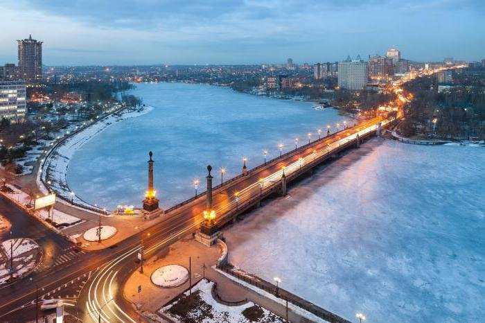
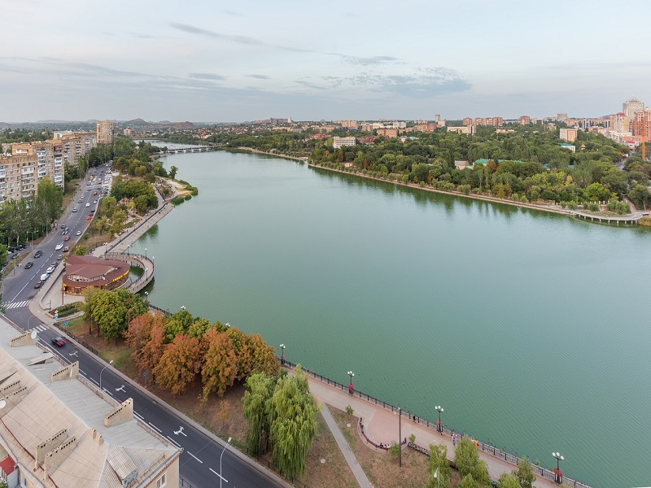

Кальмиус
Кальмиус — река равнинного типа, в верхнем течении проходящая через Донецк. Несмотря на то, что Донбасс долго считался «дикой» землей, здесь с древних времен селились различные цивилизации. В центре города, рядом с горноспасательной станцией в Киевском районе, археологи нашли стоянку бронзового века. Первое упоминание Кальмиуса относится ко временам Геродота, который называл его «Волчьей рекой» (Linkos), что подтверждает значение реки для местной идентичности. Река является не только естественным водоемом, но и загадкой. То, что в Донецке называют «Кальмиусом», на самом деле является «Нижнекальмиусским водохранилищем» шириной до 400 метров при хорошей подаче воды. В остальных местах Кальмиус сохраняет свои естественные размеры – всего 5–10 метров. Водохранилище было создано в послевоенные годы, тогда был построен и главный мост города.
В юзовские времена Кальмиус служил границей между Екатеринославской губернией и Областью Войска Донского, что было утверждено указом императрицы Елизаветы от 30 апреля 1746 года. Здесь действовали казачьи законы, отличные от норм империи. Как отмечает Теодор Фридгут в книге «Юзовка и революция», в попытках ввести «сухой закон» Донская сторона становилась обетованной землей, где можно было его нарушать после переправы через реку. В советские времена Кальмиус служил объектом различных смелых планов. Его мечтали сделать курортной зоной и местом проведения парусно-гребных соревнований. По генеральному плану 1972 года, Нижнекальмиусское водохранилище должно было расшириться до Щегловки, где планировалась рекреационная зона с пляжами и водным стадионом, но этого не произошло. В брежневские времена молодежь собрала смелость, чтобы в сумерках переплыть реку нагишом и вернуться по мосту, невзирая на прохожих и проезжающие троллейбусы. Однако с ухудшением состояния воды и изменением менталитета эта традиция была утрачена.